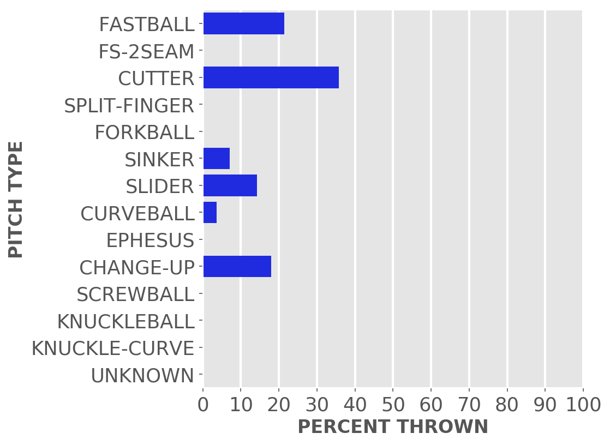
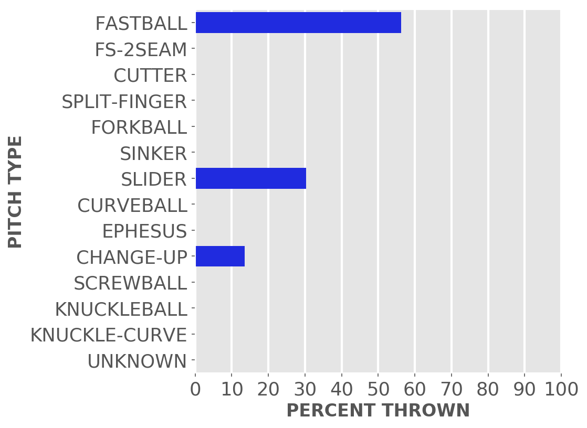
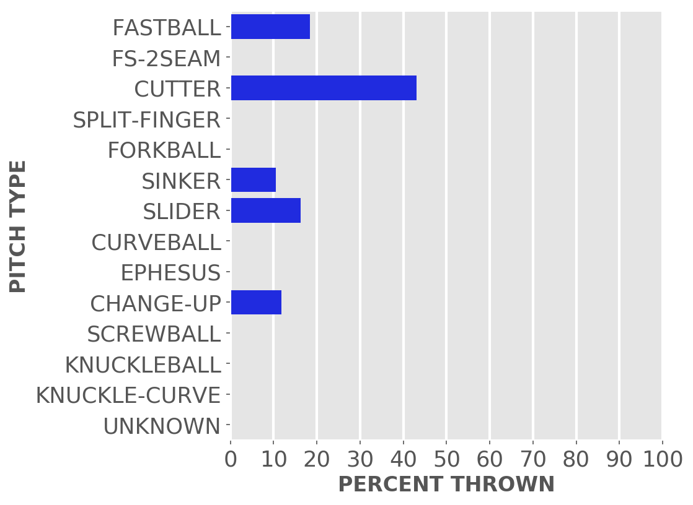
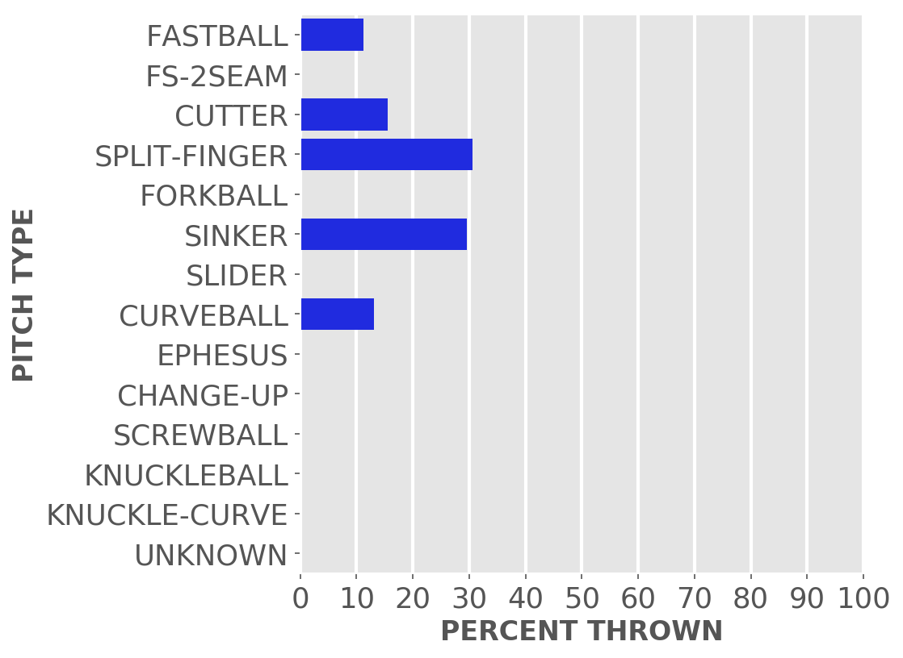
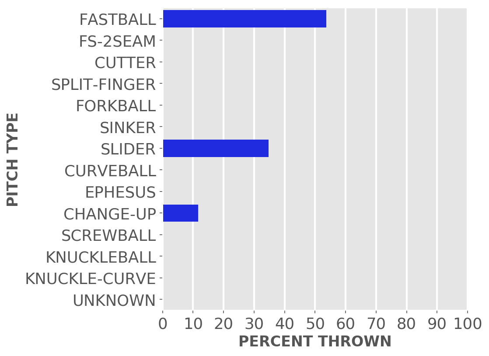
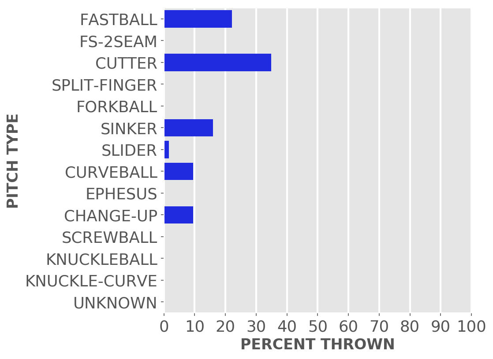
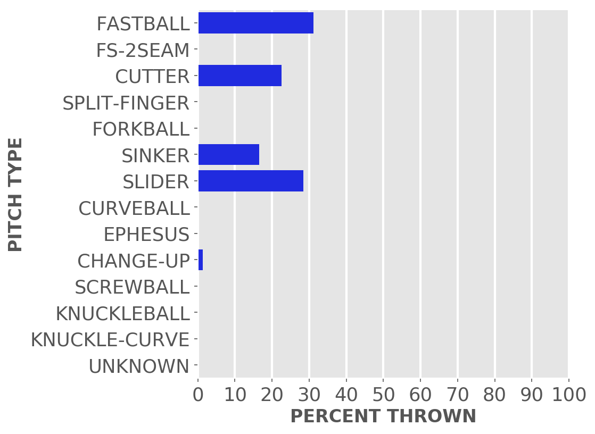

Chicago baseball
Cubs
A little-more-than-casual but not-very-wonky statistical look at the current season
Just enough stats to feed into the anxieties of your typical Cubby fan.
Updated Monday, April 10, at 1:19 p.m. Pybaseball gathers these from Baseball-reference.com.
Games
JUMP TO TOP | BATTERS | PITCHERS
On Sunday, Apr 9, the Cubs lost a day game at home against the Rangers, 2 to 8, in 9 innings. The winning pitcher was Gray, losing pitcher was Taillon. Save: None.
Next scheduled game: Monday, Apr 10, a game at home with the Mariners.
Summary results by team
| Team | Wins | Loses | Avg. Cubs runs | Avg. runs against |
|---|---|---|---|---|
| Brewers | 1 | 2 | 3.33 | 4.0 |
| Rangers | 2 | 1 | 4.67 | 3.67 |
| Reds | 1 | 1 | 9.0 | 6.0 |
Batters
JUMP TO TOP | GAMES | PITCHERS
Click the link under a player's name to get up-to-speed on a player at bat.
Tucker Barnhart #18, C
| Status (A = active) | A |
| Bats/Throws | L/R |
| Plate appearances | 10 |
| At bats | 10 |
| Hits | 4 |
| Home runs | 0 |
| Batting Avg. | 0.4 |
| Runs | 1 |
| RBI | 0 |
| On-base percent | 0.4 |
| Weighted OBP | 0.358 |
| Slugging % | 0.4 |
| Stolen bases | 0 |
| Caught stealing | 0 |
Other measures
| Weighted runs above avg. (wRAA) | 0.3 |
| Runs Above Replacement (RAR) | 1.0 |
| Fielding RAR | 0.2 |
| Wins above replacement (WAR) | 0.1 |
Cody Bellinger #24, CF
| Status (A = active) | A |
| Bats/Throws | L/L |
| Plate appearances | 34 |
| At bats | 30 |
| Hits | 5 |
| Home runs | 1 |
| Batting Avg. | 0.167 |
| Runs | 3 |
| RBI | 6 |
| On-base percent | 0.265 |
| Weighted OBP | 0.248 |
| Slugging % | 0.267 |
| Stolen bases | 1 |
| Caught stealing | 0 |
Other measures
| Weighted runs above avg. (wRAA) | -2.1 |
| Runs Above Replacement (RAR) | -0.7 |
| Fielding RAR | 0.3 |
| Wins above replacement (WAR) | -0.1 |
Yan Gomes #15, C
| Status (A = active) | A |
| Bats/Throws | R/R |
| Plate appearances | 18 |
| At bats | 17 |
| Hits | 2 |
| Home runs | 1 |
| Batting Avg. | 0.118 |
| Runs | 1 |
| RBI | 3 |
| On-base percent | 0.111 |
| Weighted OBP | 0.162 |
| Slugging % | 0.294 |
| Stolen bases | 0 |
| Caught stealing | 0 |
Other measures
| Weighted runs above avg. (wRAA) | -2.4 |
| Runs Above Replacement (RAR) | -2.0 |
| Fielding RAR | -0.1 |
| Wins above replacement (WAR) | -0.2 |
Ian Happ #8, LF
| Status (A = active) | A |
| Bats/Throws | S/R |
| Plate appearances | 36 |
| At bats | 27 |
| Hits | 10 |
| Home runs | 1 |
| Batting Avg. | 0.37 |

| Runs | 6 |
| RBI | 6 |
| On-base percent | 0.528 |
| Weighted OBP | 0.487 |
| Slugging % | 0.593 |
| Stolen bases | 0 |
| Caught stealing | 1 |
Other measures
| Weighted runs above avg. (wRAA) | 4.8 |
| Runs Above Replacement (RAR) | 4.2 |
| Fielding RAR | -1.2 |
| Wins above replacement (WAR) | 0.4 |
Nico Hoerner #2, 2B
| Status (A = active) | A |
| Bats/Throws | R/R |
| Plate appearances | 37 |
| At bats | 36 |
| Hits | 11 |
| Home runs | 0 |
| Batting Avg. | 0.306 |

| Runs | 8 |
| RBI | 0 |
| On-base percent | 0.324 |
| Weighted OBP | 0.305 |
| Slugging % | 0.361 |
| Stolen bases | 3 |
| Caught stealing | 0 |
Other measures
| Weighted runs above avg. (wRAA) | -0.6 |
| Runs Above Replacement (RAR) | 1.0 |
| Fielding RAR | -0.7 |
| Wins above replacement (WAR) | 0.1 |
Eric Hosmer #51, 1B
| Status (A = active) | A |
| Bats/Throws | L/L |
| Plate appearances | 24 |
| At bats | 22 |
| Hits | 6 |
| Home runs | 0 |
| Batting Avg. | 0.273 |

| Runs | 0 |
| RBI | 6 |
| On-base percent | 0.333 |
| Weighted OBP | 0.313 |
| Slugging % | 0.364 |
| Stolen bases | 0 |
| Caught stealing | 0 |
Other measures
| Weighted runs above avg. (wRAA) | -0.2 |
| Runs Above Replacement (RAR) | 1.2 |
| Fielding RAR | 1.2 |
| Wins above replacement (WAR) | 0.1 |
Nick Madrigal #1, 3B
| Status (A = active) | A |
| Bats/Throws | R/R |
| Plate appearances | 15 |
| At bats | 14 |
| Hits | 4 |
| Home runs | 0 |
| Batting Avg. | 0.286 |

| Runs | 2 |
| RBI | 0 |
| On-base percent | 0.333 |
| Weighted OBP | 0.31 |
| Slugging % | 0.357 |
| Stolen bases | 0 |
| Caught stealing | 0 |
Other measures
| Weighted runs above avg. (wRAA) | -0.2 |
| Runs Above Replacement (RAR) | 0.3 |
| Fielding RAR | 0.0 |
| Wins above replacement (WAR) | 0.0 |
Trey Mancini #36, 1B
| Status (A = active) | A |
| Bats/Throws | R/R |
| Plate appearances | 34 |
| At bats | 31 |
| Hits | 8 |
| Home runs | 0 |
| Batting Avg. | 0.258 |
| Runs | 3 |
| RBI | 6 |
| On-base percent | 0.273 |
| Weighted OBP | 0.239 |
| Slugging % | 0.258 |
| Stolen bases | 0 |
| Caught stealing | 0 |
Other measures
| Weighted runs above avg. (wRAA) | -2.4 |
| Runs Above Replacement (RAR) | -3.4 |
| Fielding RAR | -1.2 |
| Wins above replacement (WAR) | -0.3 |
Miles Mastrobuoni #20, SS
| Status (A = active) | A |
| Bats/Throws | L/R |
| Plate appearances | 14 |
| At bats | 14 |
| Hits | 2 |
| Home runs | 0 |
| Batting Avg. | 0.143 |
| Runs | 1 |
| RBI | 1 |
| On-base percent | 0.143 |
| Weighted OBP | 0.128 |
| Slugging % | 0.143 |
| Stolen bases | 1 |
| Caught stealing | 0 |
Other measures
| Weighted runs above avg. (wRAA) | -2.3 |
| Runs Above Replacement (RAR) | -2.0 |
| Fielding RAR | -0.3 |
| Wins above replacement (WAR) | -0.2 |
Edwin Rios #30, 3B
| Status (A = active) | A |
| Bats/Throws | L/R |
| Plate appearances | 10 |
| At bats | 8 |
| Hits | 1 |
| Home runs | 1 |
| Batting Avg. | 0.125 |

| Runs | 1 |
| RBI | 2 |
| On-base percent | 0.3 |
| Weighted OBP | 0.343 |
| Slugging % | 0.5 |
| Stolen bases | 0 |
| Caught stealing | 0 |
Other measures
| Weighted runs above avg. (wRAA) | 0.2 |
| Runs Above Replacement (RAR) | 0.1 |
| Fielding RAR | |
| Wins above replacement (WAR) | 0.0 |
Dansby Swanson #7, SS
| Status (A = active) | A |
| Bats/Throws | R/R |
| Plate appearances | 37 |
| At bats | 32 |
| Hits | 12 |
| Home runs | 0 |
| Batting Avg. | 0.375 |
| Runs | 9 |
| RBI | 3 |
| On-base percent | 0.459 |
| Weighted OBP | 0.405 |
| Slugging % | 0.438 |
| Stolen bases | 1 |
| Caught stealing | 1 |
Other measures
| Weighted runs above avg. (wRAA) | 2.5 |
| Runs Above Replacement (RAR) | 5.3 |
| Fielding RAR | 1.5 |
| Wins above replacement (WAR) | 0.5 |
Luis Torrens #22, C
| Status (A = active) | A |
| Bats/Throws | R/R |
| Plate appearances | 8 |
| At bats | 7 |
| Hits | 2 |
| Home runs | 0 |
| Batting Avg. | 0.286 |
| Runs | 0 |
| RBI | 0 |
| On-base percent | 0.375 |
| Weighted OBP | 0.312 |
| Slugging % | 0.286 |
| Stolen bases | 0 |
| Caught stealing | 0 |
Other measures
| Weighted runs above avg. (wRAA) | -0.1 |
| Runs Above Replacement (RAR) | -0.1 |
| Fielding RAR | 0.0 |
| Wins above replacement (WAR) | 0.0 |
Patrick Wisdom #16, 3B
| Status (A = active) | A |
| Bats/Throws | R/R |
| Plate appearances | 27 |
| At bats | 25 |
| Hits | 8 |
| Home runs | 3 |
| Batting Avg. | 0.32 |

| Runs | 7 |
| RBI | 6 |
| On-base percent | 0.37 |
| Weighted OBP | 0.47 |
| Slugging % | 0.76 |
| Stolen bases | 0 |
| Caught stealing | 0 |
Other measures
| Weighted runs above avg. (wRAA) | 3.3 |
| Runs Above Replacement (RAR) | 4.5 |
| Fielding RAR | 0.0 |
| Wins above replacement (WAR) | 0.4 |
Pitchers
Click the link under a player's name to get acquainted with who's on the mound.Click here for a description of these stats and more.
Adbert Alzolay #73, P
| Status (A = active) | A |
| Bats/Throws | R/R |
| Wins | 1 |
| Losses | 0 |
| ERA | 3.86 |
| Caught stealing | 0 |
| Complete games | 0 |
| Shutouts | 0 |
| Saves | 0 |
| Blown saves | 0 |
Pitch types

Fastball = Four Seam and Unclassified Fastballs; FS-2seam = Two Seam Fastballs; Ephesuses are a really slow ball
| Average innings pitched | 2.1 |
| Strikeouts per 9 innings | 15.43 |
| Walks per 9 innings | 0.0 |
| Walks, hits per inning (WHIP) | 0.43 |
| Percent left on base | 0.0 |
| Percent first pitch strike | 76.5 |
Other measures
| Avg. run support | 11.0 |
| Opponents batting average | 0.118 |
| Batting avg. on balls in play | 0.125 |
| Fielding independent pitching | 2.75 |
| Win probability added (WPA) | 0.08 |
| Runs above replacement | 0.8 |
| WAR | 0.1 |
Javier Assad #72, P
| Status (A = active) | A |
| Bats/Throws | R/R |
| Wins | 0 |
| Losses | 1 |
| ERA | 12.46 |
| Caught stealing | 0 |
| Complete games | 0 |
| Shutouts | 0 |
| Saves | 0 |
| Blown saves | 1 |
Pitch types
Fastball = Four Seam and Unclassified Fastballs; FS-2seam = Two Seam Fastballs; Ephesuses are a really slow ball
| Average innings pitched | 2.0 |
| Strikeouts per 9 innings | 10.38 |
| Walks per 9 innings | 4.15 |
| Walks, hits per inning (WHIP) | 1.85 |
| Percent left on base | 25.0 |
| Percent first pitch strike | 71.4 |
Other measures
| Avg. run support | 0.0 |
| Opponents batting average | 0.316 |
| Batting avg. on balls in play | 0.429 |
| Fielding independent pitching | 2.47 |
| Win probability added (WPA) | -0.43 |
| Runs above replacement | 1.3 |
| WAR | 0.1 |
Brad Boxberger #25, P
| Status (A = active) | A |
| Bats/Throws | R/R |
| Wins | 0 |
| Losses | 0 |
| ERA | 0.0 |
| Caught stealing | 0 |
| Complete games | 0 |
| Shutouts | 0 |
| Saves | 0 |
| Blown saves | 0 |
Pitch types
Fastball = Four Seam and Unclassified Fastballs; FS-2seam = Two Seam Fastballs; Ephesuses are a really slow ball
| Average innings pitched | 0.7 |
| Strikeouts per 9 innings | 3.86 |
| Walks per 9 innings | 3.86 |
| Walks, hits per inning (WHIP) | 0.43 |
| Percent left on base | 100.0 |
| Percent first pitch strike | 42.9 |
Other measures
| Avg. run support | 5.0 |
| Opponents batting average | 0.0 |
| Batting avg. on balls in play | 0.0 |
| Fielding independent pitching | 3.83 |
| Win probability added (WPA) | 0.04 |
| Runs above replacement | 0.1 |
| WAR | 0.0 |
Michael Fulmer #32, P
| Status (A = active) | A |
| Bats/Throws | R/R |
| Wins | 0 |
| Losses | 0 |
| ERA | 0.0 |
| Caught stealing | 0 |
| Complete games | 0 |
| Shutouts | 0 |
| Saves | 1 |
| Blown saves | 0 |
Pitch types
Fastball = Four Seam and Unclassified Fastballs; FS-2seam = Two Seam Fastballs; Ephesuses are a really slow ball
| Average innings pitched | 1.0 |
| Strikeouts per 9 innings | 18.9 |
| Walks per 9 innings | 2.7 |
| Walks, hits per inning (WHIP) | 1.2 |
| Percent left on base | 100.0 |
| Percent first pitch strike | 78.6 |
Other measures
| Avg. run support | 0.0 |
| Opponents batting average | 0.231 |
| Batting avg. on balls in play | 0.5 |
| Fielding independent pitching | 0.1 |
| Win probability added (WPA) | -0.04 |
| Runs above replacement | 2.5 |
| WAR | 0.3 |
Mark Leiter Jr. #38, P
| Status (A = active) | A |
| Bats/Throws | R/R |
| Wins | 0 |
| Losses | 0 |
| ERA | 0.0 |
| Caught stealing | 0 |
| Complete games | 0 |
| Shutouts | 0 |
| Saves | 0 |
| Blown saves | 0 |
Pitch types
Fastball = Four Seam and Unclassified Fastballs; FS-2seam = Two Seam Fastballs; Ephesuses are a really slow ball
| Average innings pitched | 1.0 |
| Strikeouts per 9 innings | 15.0 |
| Walks per 9 innings | 9.0 |
| Walks, hits per inning (WHIP) | 1.0 |
| Percent left on base | 100.0 |
| Percent first pitch strike | 58.3 |
Other measures
| Avg. run support | 0.0 |
| Opponents batting average | 0.0 |
| Batting avg. on balls in play | 0.0 |
| Fielding independent pitching | 3.06 |
| Win probability added (WPA) | 0.14 |
| Runs above replacement | 0.5 |
| WAR | 0.0 |
Julian Merryweather #66, P
| Status (A = active) | A |
| Bats/Throws | R/R |
| Wins | 0 |
| Losses | 0 |
| ERA | 16.88 |
| Caught stealing | 0 |
| Complete games | 0 |
| Shutouts | 0 |
| Saves | 0 |
| Blown saves | 0 |
Pitch types
Fastball = Four Seam and Unclassified Fastballs; FS-2seam = Two Seam Fastballs; Ephesuses are a really slow ball
| Average innings pitched | 0.7 |
| Strikeouts per 9 innings | 3.38 |
| Walks per 9 innings | 6.75 |
| Walks, hits per inning (WHIP) | 3.0 |
| Percent left on base | 37.5 |
| Percent first pitch strike | 81.3 |
Other measures
| Avg. run support | 0.0 |
| Opponents batting average | 0.429 |
| Batting avg. on balls in play | 0.462 |
| Fielding independent pitching | 4.9 |
| Win probability added (WPA) | -0.31 |
| Runs above replacement | -0.1 |
| WAR | 0.0 |
Michael Rucker #59, P
| Status (A = active) | A |
| Bats/Throws | R/R |
| Wins | 0 |
| Losses | 0 |
| ERA | 6.0 |
| Caught stealing | 0 |
| Complete games | 0 |
| Shutouts | 0 |
| Saves | 0 |
| Blown saves | 0 |
Pitch types

Fastball = Four Seam and Unclassified Fastballs; FS-2seam = Two Seam Fastballs; Ephesuses are a really slow ball
| Average innings pitched | 0.8 |
| Strikeouts per 9 innings | 15.0 |
| Walks per 9 innings | 3.0 |
| Walks, hits per inning (WHIP) | 1.33 |
| Percent left on base | 50.0 |
| Percent first pitch strike | 38.5 |
Other measures
| Avg. run support | 2.0 |
| Opponents batting average | 0.25 |
| Batting avg. on balls in play | 0.429 |
| Fielding independent pitching | 1.06 |
| Win probability added (WPA) | 0.04 |
| Runs above replacement | 0.8 |
| WAR | 0.1 |
Drew Smyly #11, P
| Status (A = active) | A |
| Bats/Throws | L/L |
| Wins | 0 |
| Losses | 1 |
| ERA | 11.57 |
| Caught stealing | 1 |
| Complete games | 0 |
| Shutouts | 0 |
| Saves | 0 |
| Blown saves | 0 |
Pitch types

Fastball = Four Seam and Unclassified Fastballs; FS-2seam = Two Seam Fastballs; Ephesuses are a really slow ball
| Average innings pitched | 4.2 |
| Strikeouts per 9 innings | 5.79 |
| Walks per 9 innings | 3.86 |
| Walks, hits per inning (WHIP) | 2.36 |
| Percent left on base | 51.7 |
| Percent first pitch strike | 69.2 |
Other measures
| Avg. run support | 6.0 |
| Opponents batting average | 0.409 |
| Batting avg. on balls in play | 0.444 |
| Fielding independent pitching | 7.47 |
| Win probability added (WPA) | -0.53 |
| Runs above replacement | -0.6 |
| WAR | -0.1 |
Justin Steele #35, P
| Status (A = active) | A |
| Bats/Throws | L/L |
| Wins | 1 |
| Losses | 0 |
| ERA | 0.75 |
| Caught stealing | 2 |
| Complete games | 0 |
| Shutouts | 0 |
| Saves | 0 |
| Blown saves | 0 |
Pitch types

Fastball = Four Seam and Unclassified Fastballs; FS-2seam = Two Seam Fastballs; Ephesuses are a really slow ball
| Average innings pitched | 6.0 |
| Strikeouts per 9 innings | 8.25 |
| Walks per 9 innings | 3.75 |
| Walks, hits per inning (WHIP) | 1.0 |
| Percent left on base | 91.7 |
| Percent first pitch strike | 55.3 |
Other measures
| Avg. run support | 6.0 |
| Opponents batting average | 0.167 |
| Batting avg. on balls in play | 0.226 |
| Fielding independent pitching | 2.81 |
| Win probability added (WPA) | 0.57 |
| Runs above replacement | 3.6 |
| WAR | 0.4 |
Marcus Stroman #0, P
| Status (A = active) | A |
| Bats/Throws | R/R |
| Wins | 2 |
| Losses | 0 |
| ERA | 0.0 |
| Caught stealing | 2 |
| Complete games | 0 |
| Shutouts | 0 |
| Saves | 0 |
| Blown saves | 0 |
Pitch types

Fastball = Four Seam and Unclassified Fastballs; FS-2seam = Two Seam Fastballs; Ephesuses are a really slow ball
| Average innings pitched | 6.0 |
| Strikeouts per 9 innings | 10.5 |
| Walks per 9 innings | 4.5 |
| Walks, hits per inning (WHIP) | 0.92 |
| Percent left on base | 100.0 |
| Percent first pitch strike | 50.0 |
Other measures
| Avg. run support | 6.0 |
| Opponents batting average | 0.128 |
| Batting avg. on balls in play | 0.2 |
| Fielding independent pitching | 2.81 |
| Win probability added (WPA) | 0.61 |
| Runs above replacement | 3.9 |
| WAR | 0.4 |
Jameson Taillon #50, P
| Status (A = active) | A |
| Bats/Throws | R/R |
| Wins | 0 |
| Losses | 2 |
| ERA | 6.0 |
| Caught stealing | 2 |
| Complete games | 0 |
| Shutouts | 0 |
| Saves | 0 |
| Blown saves | 0 |
Pitch types
Fastball = Four Seam and Unclassified Fastballs; FS-2seam = Two Seam Fastballs; Ephesuses are a really slow ball
| Average innings pitched | 4.5 |
| Strikeouts per 9 innings | 9.0 |
| Walks per 9 innings | 2.0 |
| Walks, hits per inning (WHIP) | 1.67 |
| Percent left on base | 46.7 |
| Percent first pitch strike | 62.8 |
Other measures
| Avg. run support | 4.0 |
| Opponents batting average | 0.317 |
| Batting avg. on balls in play | 0.406 |
| Fielding independent pitching | 2.06 |
| Win probability added (WPA) | -0.43 |
| Runs above replacement | 3.4 |
| WAR | 0.4 |
Keegan Thompson #71, P
| Status (A = active) | A |
| Bats/Throws | R/R |
| Wins | 0 |
| Losses | 0 |
| ERA | 1.69 |
| Caught stealing | 0 |
| Complete games | 0 |
| Shutouts | 0 |
| Saves | 0 |
| Blown saves | 0 |
Pitch types

Fastball = Four Seam and Unclassified Fastballs; FS-2seam = Two Seam Fastballs; Ephesuses are a really slow ball
| Average innings pitched | 1.7 |
| Strikeouts per 9 innings | 8.44 |
| Walks per 9 innings | 5.06 |
| Walks, hits per inning (WHIP) | 0.94 |
| Percent left on base | 80.0 |
| Percent first pitch strike | 85.7 |
Other measures
| Avg. run support | 1.0 |
| Opponents batting average | 0.111 |
| Batting avg. on balls in play | 0.154 |
| Fielding independent pitching | 3.21 |
| Win probability added (WPA) | 0.18 |
| Runs above replacement | 0.6 |
| WAR | 0.1 |
Hayden Wesneski #19, P
| Status (A = active) | A |
| Bats/Throws | R/R |
| Wins | 0 |
| Losses | 0 |
| ERA | 5.79 |
| Caught stealing | 1 |
| Complete games | 0 |
| Shutouts | 0 |
| Saves | 0 |
| Blown saves | 0 |
Pitch types
Fastball = Four Seam and Unclassified Fastballs; FS-2seam = Two Seam Fastballs; Ephesuses are a really slow ball
| Average innings pitched | 4.2 |
| Strikeouts per 9 innings | 7.71 |
| Walks per 9 innings | 3.86 |
| Walks, hits per inning (WHIP) | 1.71 |
| Percent left on base | 96.2 |
| Percent first pitch strike | 45.0 |
Other measures
| Avg. run support | 1.0 |
| Opponents batting average | 0.333 |
| Batting avg. on balls in play | 0.333 |
| Fielding independent pitching | 8.54 |
| Win probability added (WPA) | -0.09 |
| Runs above replacement | -1.3 |
| WAR | -0.1 |
JUMP TO TOP